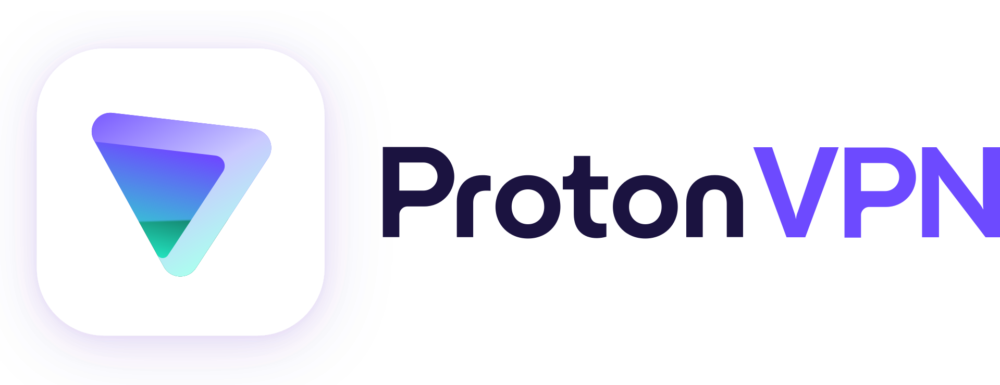

VPN's
VPN staat voor Virtual Private Network. Dit kan je "anomiem" maken, omdat mensen niet je ip weten (ze weten niet waar je woont). Echter maakt het je niet helemaal anomiem, als je dat wilt moet je Tor gebruiken (zie "Browsers"). Gebruik alsjeblieft geen gratis VPN's, zoals die van Opera of een random VPN die je ergens gevonden hebt.
Mullvad VPN (FOSS)
Mijn aanrader is Mullvad VPN als je zo veilig mogelijk wilt blijven. Het is gericht op privacy en is een van de beste VPN's die er zijn. Het is wel duur, namelijk rond de 5 euro per maand.
Proton VPN (FOSS)
Proton VPN is ook een zeer goede VPN. Proton VPN is de enige die ik vertrouw als je een gratis VPN wilt.
